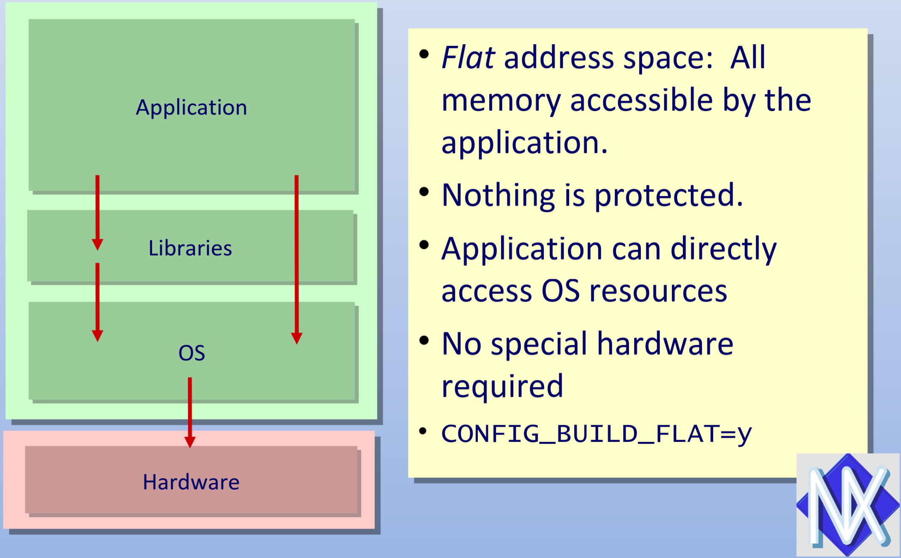
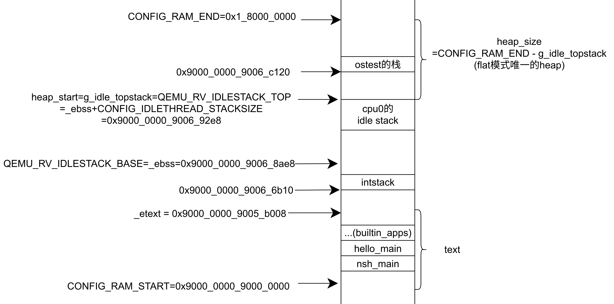
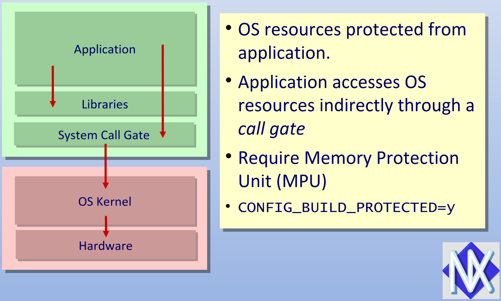
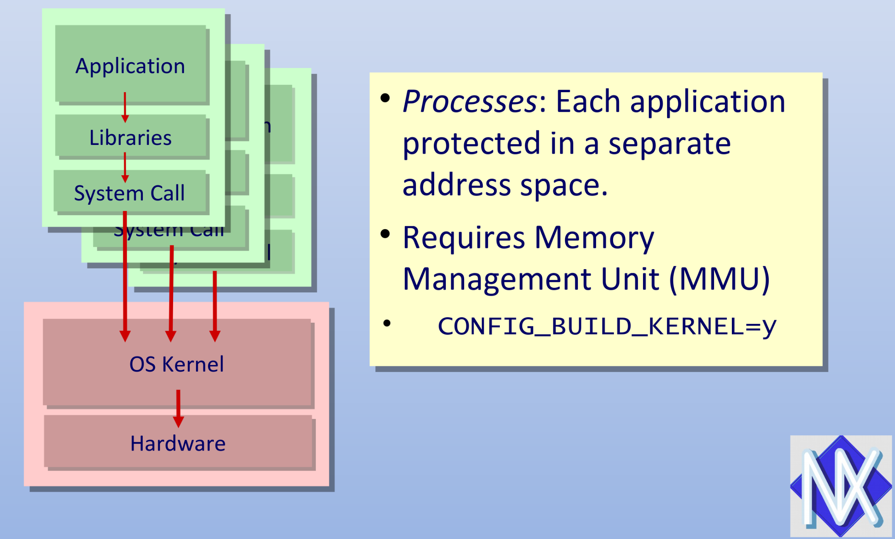
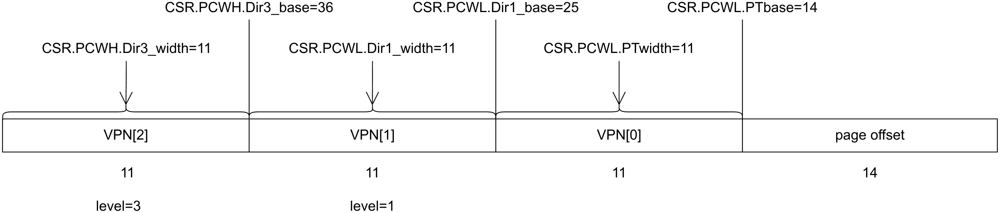
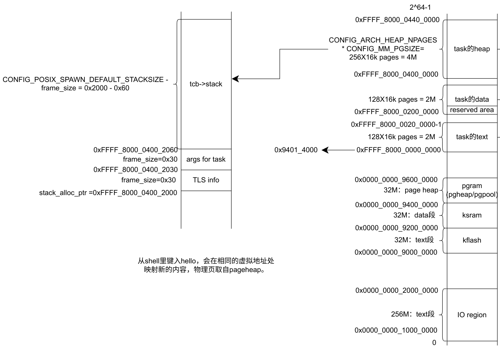
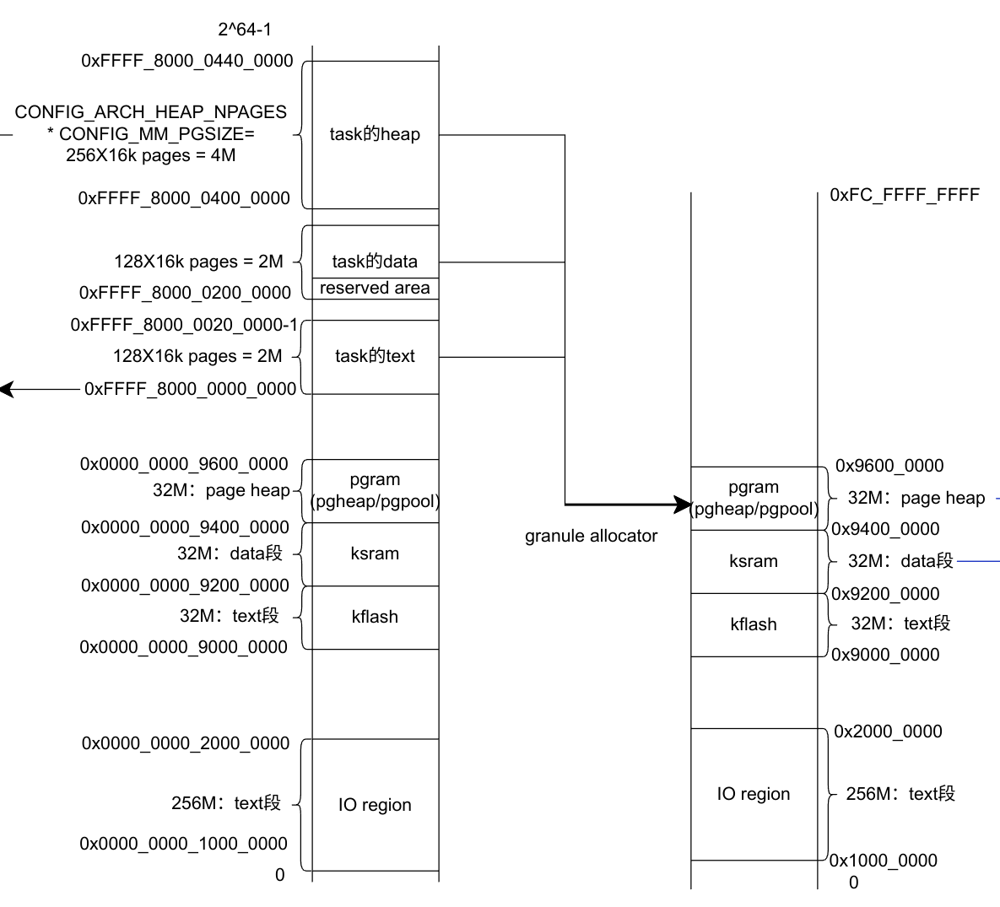
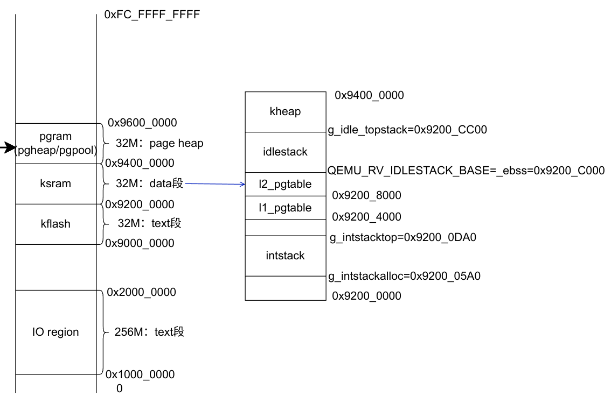
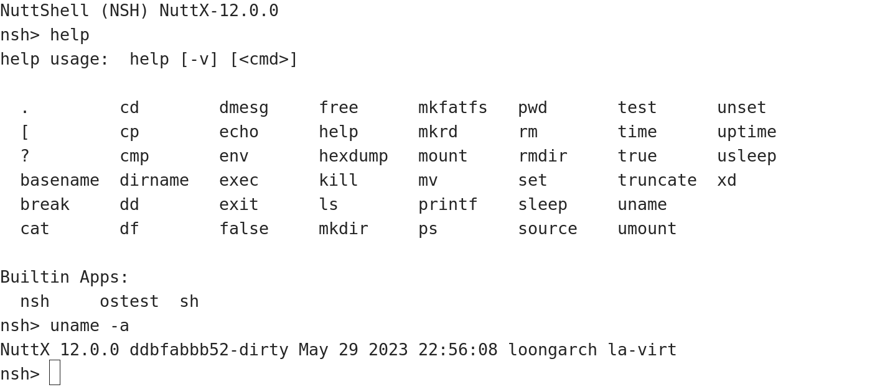

## NuttX移植总结 <br/> 刘庆涛 2023.06.02 --- ### 整体移植情况 * 移植flat和kernel模式内核, 在qemu 7.2.50正常运行 * ostest等功能测试正常, trace经调试正常使用 * qemu:增加semihosting功能, page walk及tlb refill === ### NuttX系统简介 * 实时系统 * 支持8-64位嵌入式设备 * posix兼容API * 实际应用: 小米的IoT设备、px4飞行控制软件等 === ### 内存管理 * flat模式 * protected模式(未移植) * kernel模式 --- #### 地址空间模式-flat模式 <!-- flat模式没有启用mmu，内核和用户程序都是直接使用物理内存 在我移植的内核里，直接使用了映射窗口。 -->  --- #### flat模式地址空间设计(面向物理地址) <!-- 这是flat模式的地址空间，下面是text段，中间是data,bss等段，最上面是用于动态分配内存的heap区域 内核和用户程序只有这一个heap用来分配内存。 内核有单独的栈idlestack，中断部分也有单独的栈intstack。 可以将外部应用程序放进去text段，如果需要运行，就在上面的heap里分配栈空间。 -->  --- #### 地址空间模式-protected模式 <!-- protected模式，内核和应用程序之间通过mpu进行隔离，内核通过system call gate 来提供服务 -->  --- #### 地址空间模式-kernel模式 <!-- kernel模式，需要使用mmu，应用程序有虚拟地址进行隔离。 -->  --- #### kernel模式-虚拟地址 <!-- 16KB和32MB的页 -->  --- #### kernel模式-虚拟地址空间设计 <!-- 右边是一个进程虚拟地址空间，低半部分是内核空间，高半部分是用户空间。 包括底部IO区域，text段，data段，page heap的部分。 上面是创建一个任务以后，分配的text段，data段，和它的heap。 左侧是这个任务的栈信息，包括TLS线程局部信息。 -->  --- #### kernel模式-虚实地址映射 <!-- 左侧是虚拟地址空间 右侧是物理地址空间，io区域，text段，data段的虚实地址相等。 用户动态创建的进程，在page heap里分配内存。 它使用了一个颗粒内存分配器。每个颗粒16K，有2048个颗粒。 -->  --- #### kernel模式-物理地址 <!-- 左侧是物理地址 右侧是内核的data部分的详细设计。 intstack是中断栈。 pgtable是内核的页表。idlestack是内核的栈。kheap是为内核对象动态分配内存的堆。 -->  === ### 中断与例外 * 初始化 * CSR.EENTRY, CSR.TLBRENTRY * 注册handlers * 开启 时钟中断,uart中断 --- #### flat模式例外处理流程(e.g. shell调用read) <!-- flat模式，如果在shell里调用read，会通过函数调用的方式，最终调用到库函数uart_read，然后阻塞，切换到内核的idle thread栈 uart如果有输入的话，再释放信号量，调度shell程序，从内核线程切换回用户线程。 --> 用户程序调用read, 通过函数调用到库函数uart_read ⇓ 用户线程阻塞在recv状态, 切换到内核线程idle task ⇓ uart读入, 中断内核线程，切换回用户线程 --- #### kernel模式例外处理流程(e.g. shell调用read) 不能直接调用特权模式代码uart_read(库函数) 需要切换到内核栈 --- #### kernel模式例外处理流程(e.g. shell调用read) * shell发起read系统调用(①保存EPC,prmd,用户栈指针;②设置epc=trampoline, prmd高特权等级使能中断, sp=线程内核栈; ③例外返回到trampoline) ⇓ * ①trampoline读系统调用号, 最终调用库uart_read, 阻塞在读信号量; ②调用switch_context(手动保存上下文, crmd, 设置prmd等) , 切换到内核线程idle_thread ⇓ * 内核线程idle thread在loop中, 等待uart中断 --- #### kernel模式例外处理流程(e.g. shell调用read) * 发生uart中断, 进入CSR.EENTRY, 处理中断: 释放信号量, 切换线程到shell程序(处于中断过程, 不再嵌套系统调用, 而是改变上下文指针), 恢复shell内核栈 ⇓返回结果，切换回用户栈 * 返回trampoline, 发起系统调用返回用户空间(恢复用户栈EPC, prmd, sp->用户栈, 低特权等级),例外返回。 === ### 任务 * kernel thread * task * pthread * task group: 主task, 其他pthread共享group addrenv === ### 调度策略 * SCHED_RR: pre-emptive * SCHED_FIFO: pre-emptive * SCHED_SPORADIC --- #### 进程运行状态 ``` enum tstate_e { TSTATE_TASK_INVALID = 0, /* INVALID - The TCB is uninitialized */ TSTATE_TASK_PENDING, /* READY_TO_RUN - Pending preemption unlock */ TSTATE_TASK_READYTORUN, /* READY-TO-RUN - But not running */ #ifdef CONFIG_SMP TSTATE_TASK_ASSIGNED, /* READY-TO-RUN - Not running, but assigned to a CPU */ #endif TSTATE_TASK_RUNNING, /* READY_TO_RUN - And running */ TSTATE_TASK_INACTIVE, /* BLOCKED - Initialized but not yet activated */ TSTATE_WAIT_SEM, /* BLOCKED - Waiting for a semaphore */ TSTATE_WAIT_SIG, /* BLOCKED - Waiting for a signal */ #if !defined(CONFIG_DISABLE_MQUEUE) || !defined(CONFIG_DISABLE_MQUEUE_SYSV) TSTATE_WAIT_MQNOTEMPTY, /* BLOCKED - Waiting for a MQ to become not empty. */ TSTATE_WAIT_MQNOTFULL, /* BLOCKED - Waiting for a MQ to become not full. */ #endif #ifdef CONFIG_PAGING TSTATE_WAIT_PAGEFILL, /* BLOCKED - Waiting for page fill */ #endif #ifdef CONFIG_SIG_SIGSTOP_ACTION TSTATE_TASK_STOPPED, /* BLOCKED - Waiting for SIGCONT */ #endif NUM_TASK_STATES /* Must be last */ }; ``` --- #### 启动新进程-semihosting 启动新进程需要加载代码段 编好的程序存放在host上 semihosting实现从guest操作host文件系统 --- #### semihosting具体实现 1.qemu翻译到特定指令序列, 触发semihost例外 ``` slli.d $r0, $r0, 0x1f 0x00417c00 dbcl 0 0x002a8000 srai.d $r0, $r0, 0x7 0x00491c00 //... if(pre == 0x00417c00 && dbcl == 0x002a8000 && post == 0x00491c00){ generate_exception(ctx, EXCCODE_SEMIHOST); } ``` 2.loongarch_cpu_do_interrupt检测到semihost例外, 跳转到处理程序<!-- .element: style="text-align: left;" --> --- 3.解析类型和参数,跳到handler. <!-- .element: style="text-align: left;" --> 3.1 e.g. type = TARGET_SYS_READ<!-- .element: style="text-align: left;" --> 需要将文件内容从host读取到guest的virt addr 3.2 但是qemu(3A5000)须OS做tlb refill, 修改为semihost例外下, qemu做page walk和tlb refill<!-- .element: style="text-align: left;" --> ``` if(cs->exception_index != EXCCODE_SEMIHOST){ return TLBRET_NOMATCH; }else{ //page walk //tlb refill } ``` --- 4.semihosting读取成功, OS做relocation, 涉及: ``` static struct rname_code_s _rname_table[] = { {"R_LARCH_32", R_LARCH_32}, {"R_LARCH_64", R_LARCH_64}, {"SOP_PUSH_PCREL", R_LARCH_SOP_PUSH_PCREL}, {"SOP_PUSH_ABSOLUTE", R_LARCH_SOP_PUSH_ABSOLUTE}, {"SOP_PUSH_GPREL", R_LARCH_SOP_PUSH_GPREL}, {"SOP_PUSH_PLT_PCREL", R_LARCH_SOP_PUSH_PLT_PCREL}, {"SOP_SUB", R_LARCH_SOP_SUB}, {"SOP_SL", R_LARCH_SOP_SL}, {"SOP_SR", R_LARCH_SOP_SR}, {"SOP_ADD", R_LARCH_SOP_ADD}, {"SOP_POP_32_S_10_12", R_LARCH_SOP_POP_32_S_10_12}, {"SOP_POP_32_S_10_16_S2", R_LARCH_SOP_POP_32_S_10_16_S2}, {"SOP_POP_32_S_5_20", R_LARCH_SOP_POP_32_S_5_20}, {"SOP_POP_32_S_0_5_10_16_S2", R_LARCH_SOP_POP_32_S_0_5_10_16_S2}, {"SOP_POP_32_S_0_10_10_16_S2", R_LARCH_SOP_POP_32_S_0_10_10_16_S2}, }; ``` === ### 文件系统-pseudo root file system * 内存中，不需要存储介质 * 所有资源都是其中的文件 * 文件系统的内容可以通过标准接口(read/write/open/close etc.)动态生成 * 可以挂载真实文件系统(支持mount) === ### 功能测试  --- #### 具体命令测试 * ostest功能测试通过 * 基础命令行信息查看命令: help, ls, uname * 块设备、文件系统创建删除: mkrd, dd, hexdump, rm * 时间相关: sleep, usleep, uptime, time测试时间 * 进程创建, 查看, 退出: sh ps exit --- #### 具体命令测试 * 文件系统挂载与卸载: mount挂载host文件系统, cat查看host的文件。 * mkrd 创建ramdisk: ram0, mkfatfs将ram0格式化为fatfs, mount命令将其挂载 dd命令, 可以将/host/AUTHORS里的内容写到ram0里。 * 复制和dump文件: cp, hexdump === ### 后续研究方向 * 实时性 * IPC * 网络/图形/可信计算？ --- #### 关于实时性 * 官网: 可抢占的调度策略 FIFO, RR, SPORADIC, 实时性充分条件? * NuttX实时性测试: 对NuttX和ChilibOS(2021 International Conference on Unmanned Aircraft Systems) * NuttX实时性调度的形式化验证(Nuttx 操作系统进程切换调度实时性的形式化验证[J]. 计算机应用与软件, 2018) --- #### 关于IPC * 宏内核, 应用场景不典型？ * 调研dipc, skybridge, xpc, improving ipc by kernekl design * NuttX提供了共享内存的API, 但是还没有移植 * 考虑缩短message queue, signal的时间 --- #### 一个可能的方案 1.从真机跑OS<!-- .element: style="text-align: left;" --> 1.1 flat模式, 用户程序和内核都编译到代码段里<!-- .element: style="text-align: left;" --> *1.2 (6月)kernel模式, 用户程序从磁盘加载, 替代semihost<!-- .element: style="text-align: left;" --> 2.(7-10月)根据NuttX论文写测试, 分析, 优化, 对比.(测试程序未开源)<!-- .element: style="text-align: left;" --> *3.(11-12月)增强说服力, (移植现实软件? e.g.sqlite) <!-- .element: style="text-align: left;" --> === ### 需要调研的问题 * 实时系统的充分条件？可抢占的调度？ * 内核比较简单，可优化空间？